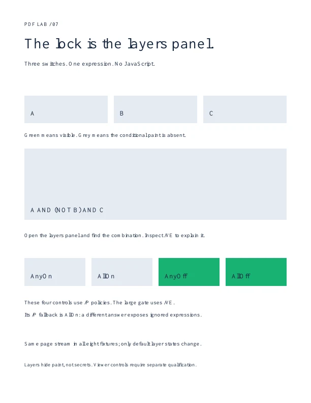
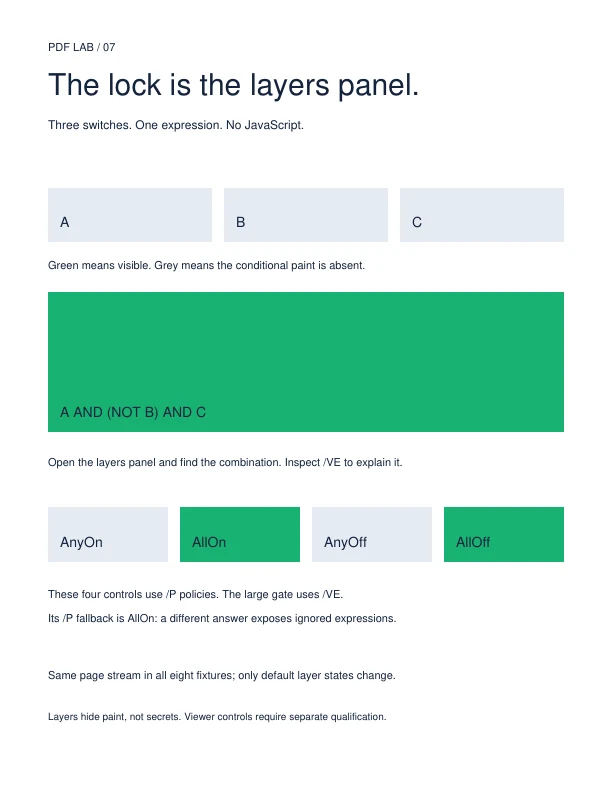

07 / A LOGIC CIRCUIT DISGUISED AS LAYERS
The lock is the layers panel.
Three switches. No scripts. The intended combination is A on, B off, C on. Does every reader agree?
Poppler · 24.02.0

MuPDF · 1.26.11

PDFium · 156.0.8076.0
How to reverse-engineer the lock
Find /OCProperties in the catalog. A, B and C are optional-content groups. The gate is a membership dictionary with /VE [/And 5 0 R [/Not 6 0 R] 7 0 R]. The page uses marked content to associate paint with that dictionary.
All eight PDFs have identical page streams. Only the catalog's initial layer states differ. Poppler and PDFium match the intended table in all states. This MuPDF build keeps the gate visible and differs on AllOn and AnyOff. The cause remains unassigned; this is not a claim about every MuPDF release.
Try the PDF's actual layers panel in your reader and record its version. These saved-state images do not establish interactive support in Acrobat, Preview or browser viewers.